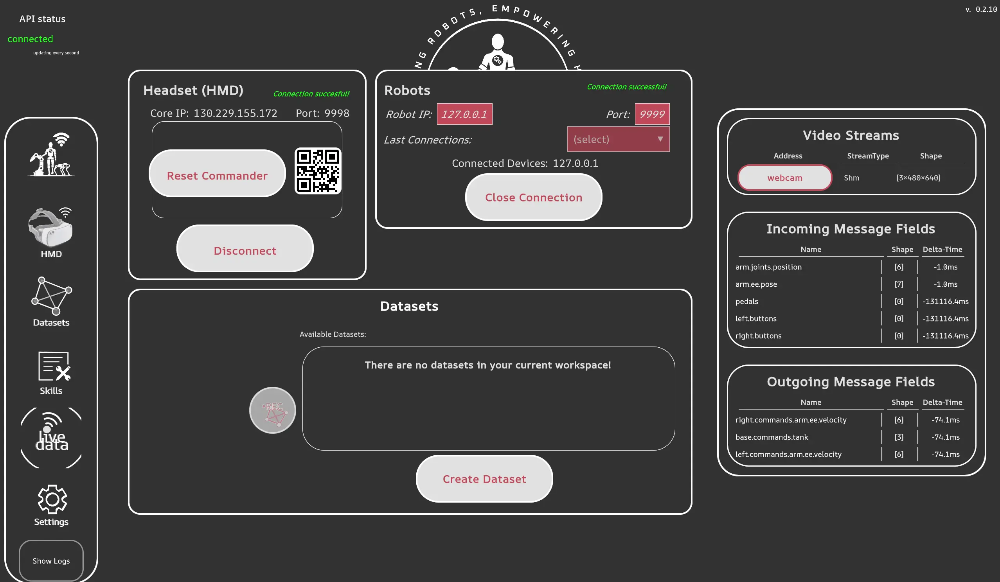
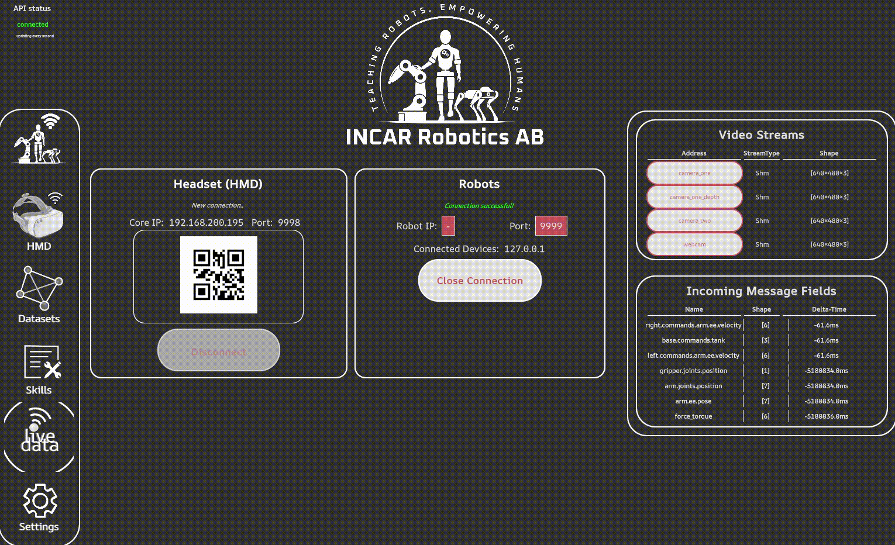

Collecting data
Dataset Structure
A dataset has the following structure:
example_ds/
├── demo_0/
│ ├── example_feature/
│ │ └── data.h5
│ ├── video_feature/
│ │ ├── data.mp4
│ │ └── timestamps.h5
│ └── meta.json
├── demo_1/
│ └── ...
├── demo_2/
│ └── ...
└── dataset_config.json
A demo is one recording consisting of various features. Features can be an of one of the following types:
- "VISUAL": these are image types
- "STATE": these are arrays of floats that can be read from the robot system (e.g. joint states, force sensors)
- "ACTION": these are arrays of floats that are input into the robot system (e.g. a cartesian velocity command)
- "TEXT": this can be used for serializing any other data, e.g. user input button data can be saved as a json string.
Each dataset has a config file named dataset_config.json which describes the features and their shapes that are present in the dataset. Furthermore each demo has a meta.json file which describes when the demo was recorded, statistics used for normalization as well as some other information.
Dataset Creation
In order to create a new dataset, open the dataset panel and click the '+' icon. You can now choose a name for the dataset and select all features that you want to record. Features that can be selected for recording are:
- video stream keys (as they appear under Live Data - Video Streams)
- outgoing commands (as they appear under Live Data - Incomming message fields)
- incomming robot state (as they appear under Live Data - Incomming message fields)

If the features are missing from the live data, ensure that you have connected the headset and the robot.Recording a demo
To record a demo, make sure you select a dataset first and then use the start, stop or discard buttons in the GUI. The screen will turn red to indicate the recording state. Alternatively, you can start/stop recording by pressing Y + rightTrigger, and discard by pressing B + rightTrigger on the controllers.
Note
Custom keybinding is on the roadmap.

It is good to ensure that the first demo of a recording session indeed recorded properly. Reasons for a recording to fail can be:
- Not all features as established in
dataset_config.jsonare received. Make sure that all features you want to record are actually recorded by inspecting the incomming messages. - The feature type established in
dataset_config.jsondiffers from the received type. - The shape of the received data does not correspond to the shape established in
dataset_config.json.
If a demo recording fails for any reason, it will log a warning.
If you want to inspect the dataset, you can go to the folder [ws_path]/datasets/[dataset_name]/demo_[x] and see the data of all the features.
Next step: Training a policy